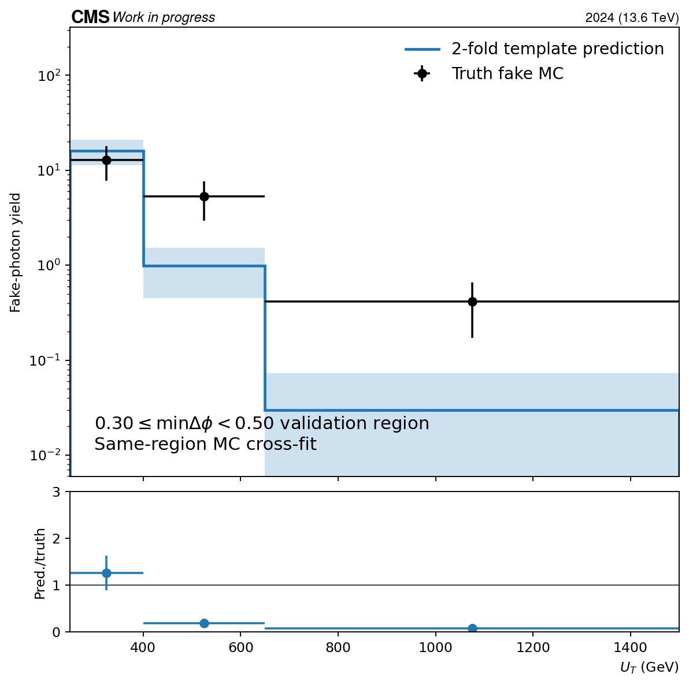
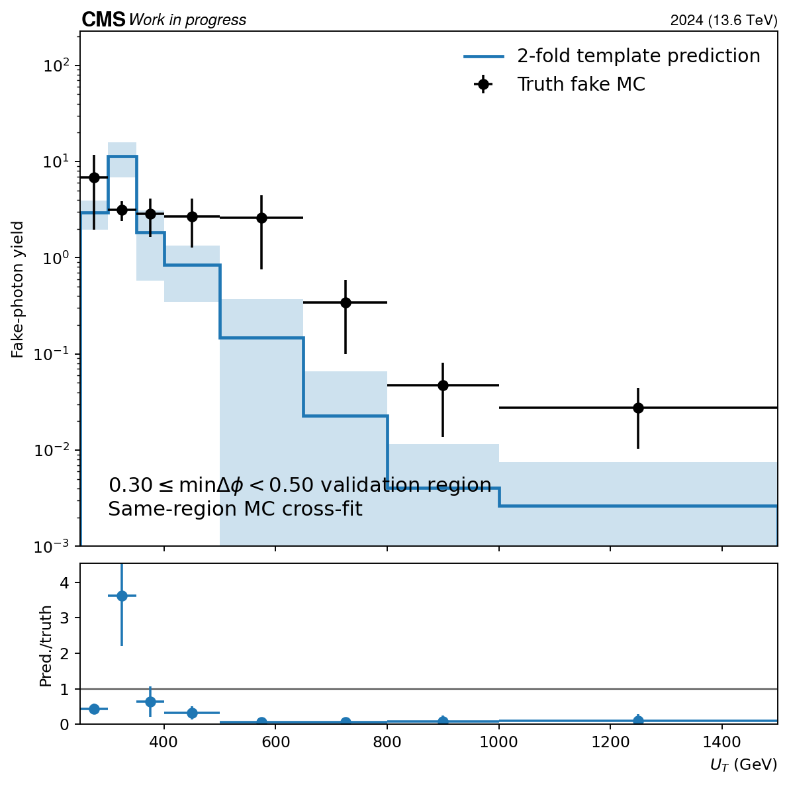
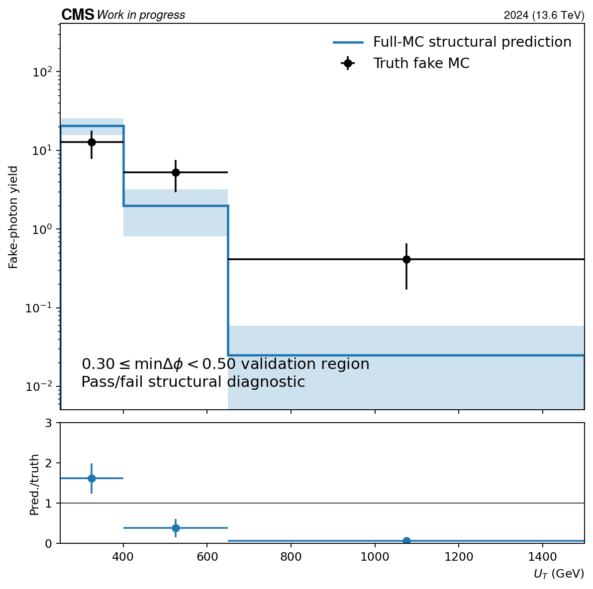
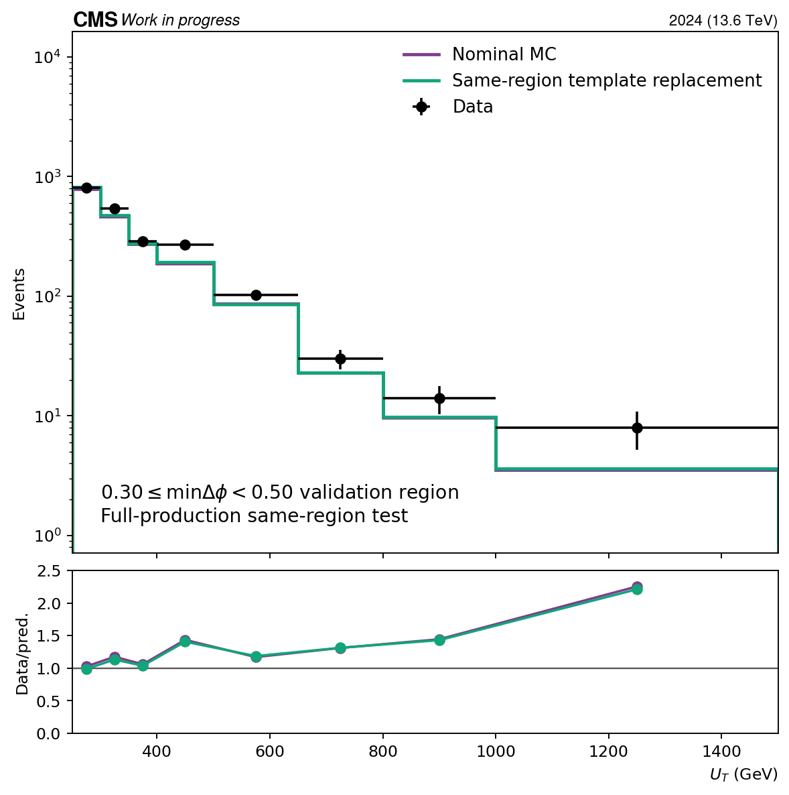
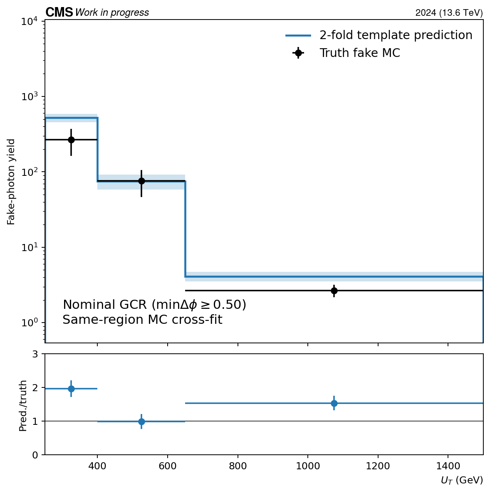
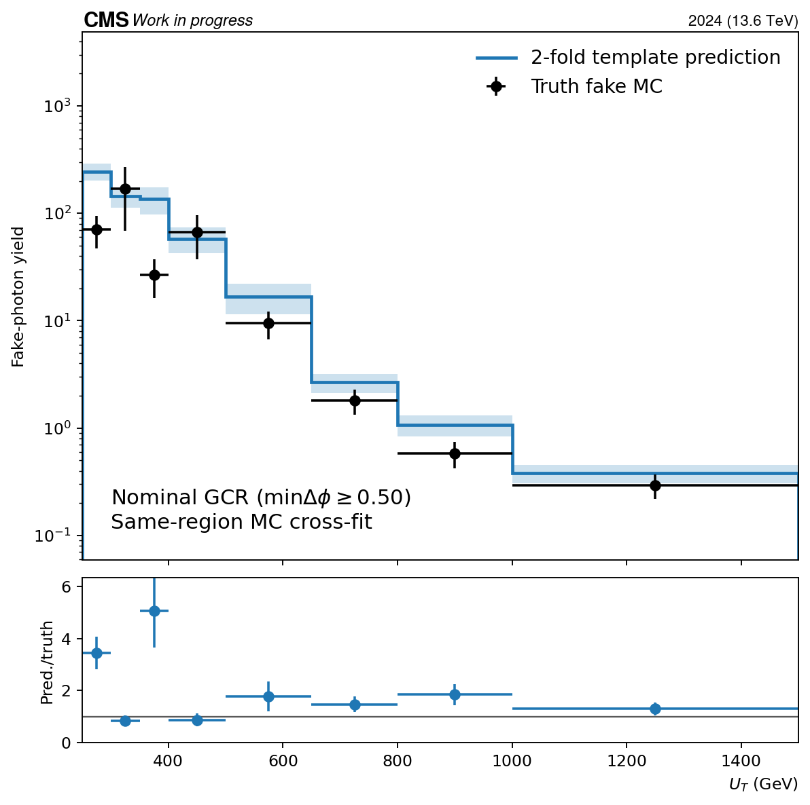
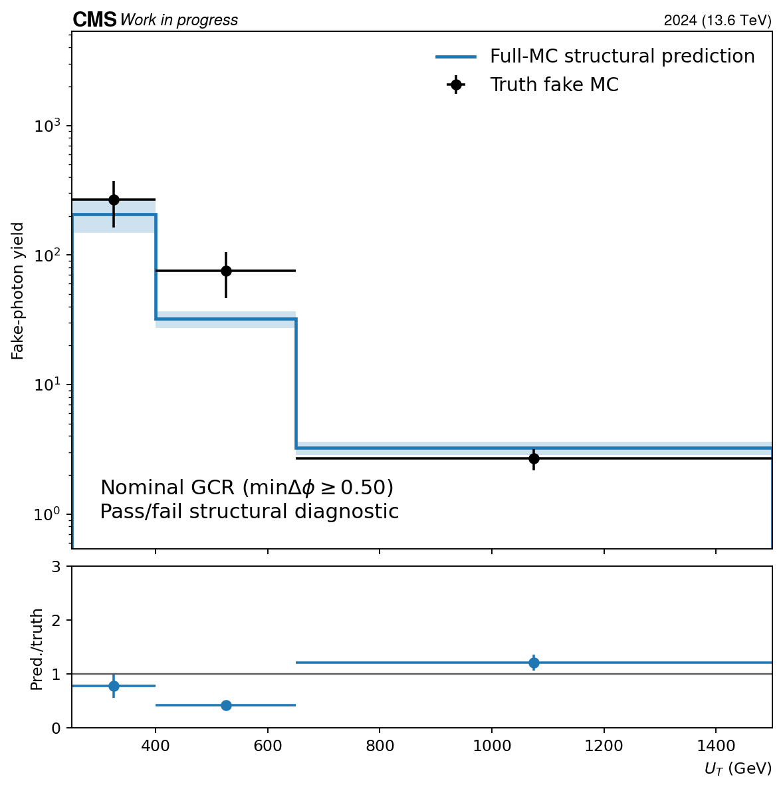
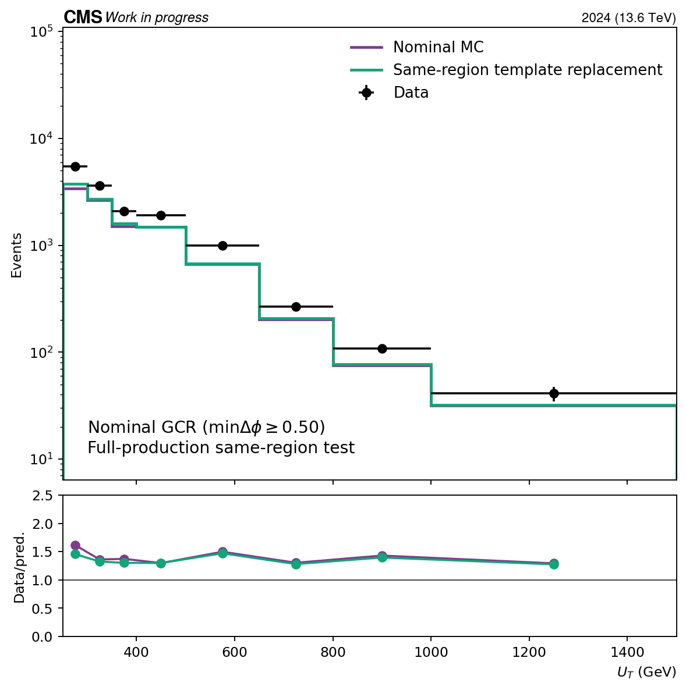

Status: complete full-production evaluation.
Decision: do not adopt: one or more closure, stability, or prefit Data/MC gates failed.
The fake shower-shape template and the pass-region fit use the same delta-phi topology but disjoint charged-isolation states. One integrated fake normalization is fitted per EB/EE and photon-pT group; the U_T shape comes from the tight-shape charged-isolation-fail data residual and is not fitted independently in every U_T bin. The MC closure is a deterministic two-fold cross-fit, so no event is used both to build its template and to test it.
Inputs: 6185 compact files and 443895 events. Nominal intermediates were not modified.
| Region | Data | Nominal MC | Template total | Fitted fake | 2-fold MC pred./truth | Structural MC pred./truth | Truth Neff | Usable fit pieces |
|---|---|---|---|---|---|---|---|---|
| GCR_DPhiVR_High | 2062 | 1830.74 | 1887.9 | 75.6674 | 0.926126496840719 | 1.2248898161892237 | 11.1 | 8/8 |
| GCR | 14480 | 9997.66 | 10542.3 | 890.169 | 1.7456147500933004 | 0.6997533898195392 | 10.2 | 8/8 |
| Region | Group | Fail-iso data | Pass-iso data | Tight-shape fraction | Clipped bins | Usable |
|---|---|---|---|---|---|---|
| GCR_DPhiVR_High | EB_pt220to400 | 1300 | 1258 | 0.3957 | 0 | True |
| GCR_DPhiVR_High | EE_pt220to400 | 494 | 511 | 0.4835 | 1 | True |
| GCR_DPhiVR_High | EB_pt400toinf | 401 | 349 | 0.2275 | 0 | True |
| GCR_DPhiVR_High | EE_pt400toinf | 93 | 82 | 0.5392 | 0 | True |
| GCR | EB_pt220to400 | 7969 | 8498 | 0.4298 | 1 | True |
| GCR | EE_pt220to400 | 3712 | 3488 | 0.5374 | 0 | True |
| GCR | EB_pt400toinf | 2966 | 2828 | 0.3629 | 2 | True |
| GCR | EE_pt400toinf | 850 | 744 | 0.512 | 1 | True |








Detailed report: report.md
Machine-readable output: evaluation.json